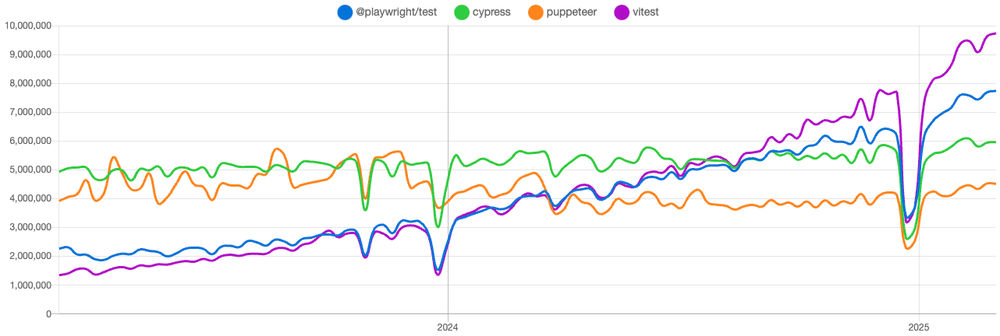
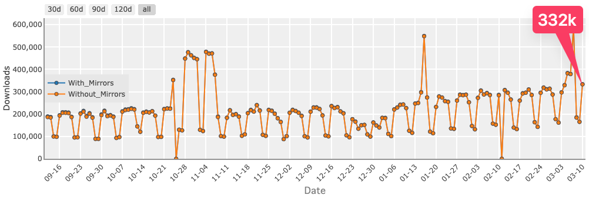
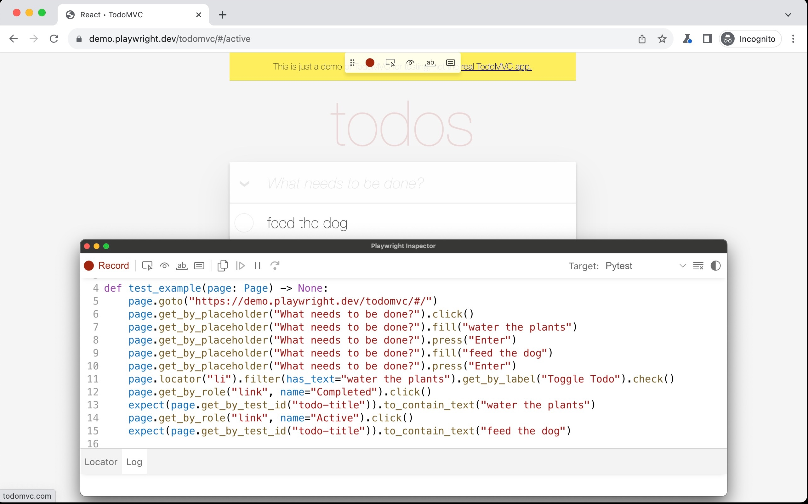
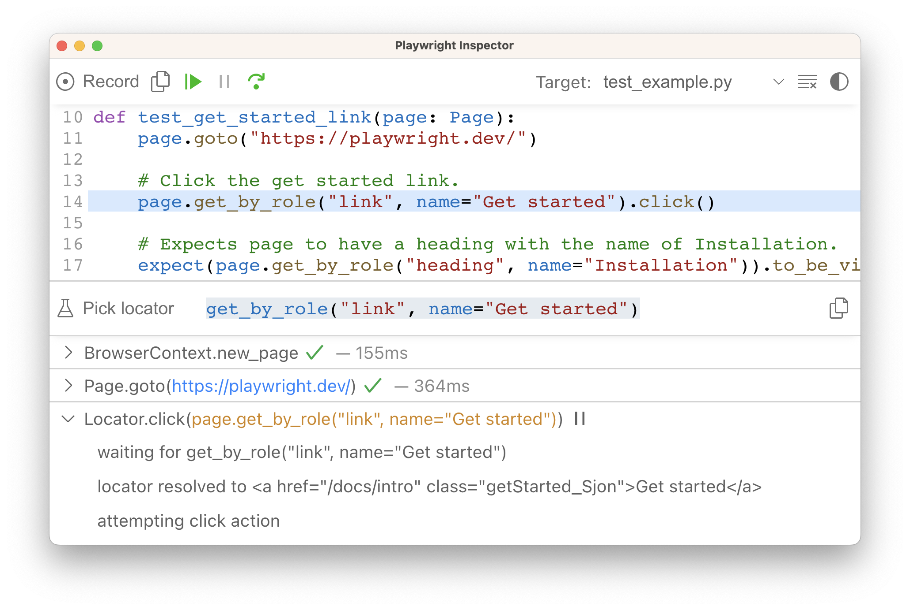

<!DOCTYPE html>
<html lang="en">
<head>
    <meta charset="utf-8" />
    <meta name="viewport" content="width=device-width, initial-scale=1.0, maximum-scale=1.0, user-scalable=no" />

    <title></title>
    <link rel="stylesheet" href="dist/reset.css">
    <link rel="stylesheet" href="dist/reveal.css" />
    <link rel="stylesheet" href="css/slides-extended.css" />
    <link rel="stylesheet" href="dist/theme/blood.css" id="theme" />
    <link rel="stylesheet" href="plugin/highlight/monokai.css" />
    <link rel="stylesheet" href="plugin/customcontrols/style.css">


    <script defer src="dist/fontawesome/all.min.js"></script>

    <script type="text/javascript">
        function pageInIframe() {
            return (window.location !== window.parent.location);
        }

        let forgetPop = true;
        function onPopState(event) {
            if(forgetPop){
                forgetPop = false;
            } else if( pageInIframe()) {
                parent.postMessage(event.target.location.href, "app://obsidian.md");
            }
        }
        window.onpopstate = onPopState;
        window.onmessage = event => {
            if(event.data == "reload"){
                window.document.location.reload();
            }
            forgetPop = true;
        }

        function fitElements() {
            const itemsToFit = document.getElementsByClassName('fitText');
            for (const item in itemsToFit) {
                if (Object.hasOwnProperty.call(itemsToFit, item)) {
                    const element = itemsToFit[item];
                    fitElement(element, 1, 1000);
                    element.classList.remove('fitText');
                }
            }
        }

        function fitElement(element, start, end) {

            let size = (end + start) / 2;
            element.style.fontSize = `${size}px`;

            if (Math.abs(start - end) < 1) {
                while (element.scrollHeight > element.offsetHeight) {
                    size--;
                    element.style.fontSize = `${size}px`;
                }
                return;
            }

            if (element.scrollHeight > element.offsetHeight) {
                fitElement(element, start, size);
            } else {
                fitElement(element, size, end);
            }
        }


        document.onreadystatechange = () => {
            fitElements();
            if (document.readyState === 'complete') {
                if (pageInIframe() && window.location.href.indexOf("?export") != -1){
                    parent.postMessage(event.target.location.href, "app://obsidian.md");
                }
                if (window.location.href.indexOf("print-pdf") != -1){
                    let stateCheck = setInterval(() => {
                        clearInterval(stateCheck);
                        window.print();
                    }, 250);
                }
            }
        };
    </script>
</head>

<body>
    <div class="reveal">
        <div class="slides"><section  data-markdown><script type="text/template"><!-- .slide: class="drop" template="" -->
<div class="" style="position: absolute; left: 0px; top: 0px; height: 768px; width: 1366px; min-height: 768px; display: flex; flex-direction: column; align-items: center; justify-content: center" absolute="true">

#### Dlaczego Playwright
## bez TypeScript
# jest lepszy?
</div></script></section><section  data-markdown><script type="text/template"><!-- .slide: class="drop" template="" -->
<div class="" style="position: absolute; left: 0px; top: 0px; height: 768px; width: 1366px; min-height: 768px; display: flex; flex-direction: column; align-items: center; justify-content: center" absolute="true">


by Maciej Kusz
</div></script></section><section  data-markdown><script type="text/template"><!-- .slide: class="drop" template="" -->
<div class="" style="position: absolute; left: 0px; top: 0px; height: 768px; width: 1366px; min-height: 768px; display: flex; flex-direction: column; align-items: center; justify-content: center" absolute="true">

### O mnie

- ­tester od blisko 16 lat
- ­automatyzuje testy od ponad 11 lat
- ­testowanie UI, API, IoT, wydajność
- ­tester, test lead, architekt
- ­prelegent na różnych konferencjach i meetupach
- ­... oraz współorganizator: ŚlonzaczQA, ConSelenium i TestWarez
- ­a prywatnie mąż, ojciec i zapalony majsterkowicz ...
- ... autor bloga [testerembyc.pl](https://testerembyc.pl)
- ­... twórca biblioteki [mkdocs-publisher](https://mkdocs-publisher.github.io/)
- ... oraz szkoleniowiec
</div></script></section><section  data-markdown><script type="text/template"><!-- .slide: class="drop" template="" -->
<div class="" style="position: absolute; left: 0px; top: 0px; height: 768px; width: 1366px; min-height: 768px; display: flex; flex-direction: column; align-items: center; justify-content: center" absolute="true">

<iframe src="https://wall.sli.do/event/5PkWMjQGinKkxyFesStLzP?section=953fc212-5c4d-439d-9dc1-cc602fe1f38c" width="1366" height="768"></iframe>
</div></script></section><section  data-markdown><script type="text/template"><!-- .slide: class="drop" template="" -->
<div class="" style="position: absolute; left: 0px; top: 0px; height: 768px; width: 1366px; min-height: 768px; display: flex; flex-direction: column; align-items: center; justify-content: center" absolute="true">

#### Trochę historii

| Framework  | 1 commit |          Wspierane języki          |
| ---------- |:--------:|:----------------------------------:|
| Selenium   |   2004   | .NET, Java, Ruby, Python, JavaScript |
| Cypress    |   2017   |             JavaScript             |
| Playwright |   2020   |    .NET, Java, Python, JavaScript    |

<div class="" style="font-size: 20px; position: absolute; left: 50%; top: 90%; height: 10%; width: 50%; display: flex; flex-direction: column; align-items: center; justify-content: center" >

Selenium 4.0.0 ukazało się z końcem października 2021
</div>
</div></script></section><section  data-markdown><script type="text/template"><!-- .slide: class="drop" template="" -->
<div class="" style="position: absolute; left: 0px; top: 0px; height: 768px; width: 1366px; min-height: 768px; display: flex; flex-direction: column; align-items: center; justify-content: center" absolute="true">

#### Ilość pobrań





<br></br>
<div class="" style="font-size: 16px; position: absolute; left: 50%; top: 90%; height: 10%; width: 50%; display: flex; flex-direction: column; align-items: center; justify-content: center" >

żródło: npm trends i  pypi stats
</div>
</div></script></section><section  data-markdown><script type="text/template"><!-- .slide: class="drop" template="" -->
<div class="" style="position: absolute; left: 0px; top: 0px; height: 768px; width: 1366px; min-height: 768px; display: flex; flex-direction: column; align-items: center; justify-content: center" absolute="true">

#### Instalacja

```bash
pip install playwright pytest-playwright

playwright install --with-deps

playwright --version
```
<!-- .element: class="fragment" data-fragment-index="1" -->

```bash
npm init playwright@latest

npx playwright install --with-deps

npx playwright --version
```
<!-- .element: class="fragment" data-fragment-index="2" -->
</div></script></section><section  data-markdown><script type="text/template"><!-- .slide: class="drop" template="" -->
<div class="" style="position: absolute; left: 0px; top: 0px; height: 768px; width: 1366px; min-height: 768px; display: flex; flex-direction: column; align-items: center; justify-content: center" absolute="true">

####  Wbudowane narzędzia

|     | Python | TypeScript |
| --- | :---: | :---: |
| Codegen | ✅ | ✅ | 
| Inspector | ✅ | ✅ | 
| Trace viewer | ✅ | ✅ |
</div></script></section><section  data-markdown><script type="text/template"><!-- .slide: class="drop" template="" -->
<div class="" style="position: absolute; left: 0px; top: 0px; height: 768px; width: 1366px; min-height: 768px; display: flex; flex-direction: column; align-items: center; justify-content: center" absolute="true">

#### Codegen

```bash
playwright codegen demo.playwright.dev/todomvc
```
<!-- .element: class="fragment" data-fragment-index="1" -->

```bash
npx playwright codegen demo.playwright.dev/todomvc
```
<!-- .element: class="fragment" data-fragment-index="2" -->



<!-- .element: class="fragment" data-fragment-index="3" -->
</div></script></section><section  data-markdown><script type="text/template"><!-- .slide: class="drop" template="" -->
<div class="" style="position: absolute; left: 0px; top: 0px; height: 768px; width: 1366px; min-height: 768px; display: flex; flex-direction: column; align-items: center; justify-content: center" absolute="true">

#### Inspector

```bash
PWDEBUG=1 pytest -s
```
<!-- .element: class="fragment" data-fragment-index="1" -->

```bash
npx playwright test --debug
```
<!-- .element: class="fragment" data-fragment-index="2" -->



<!-- .element: class="fragment" data-fragment-index="3" -->
</div></script></section><section  data-markdown><script type="text/template"><!-- .slide: class="drop" template="" -->
<div class="" style="position: absolute; left: 0px; top: 0px; height: 768px; width: 1366px; min-height: 768px; display: flex; flex-direction: column; align-items: center; justify-content: center" absolute="true">

#### Trace viewer

```bash
playwright show-trace trace.zip
```
<!-- .element: class="fragment" data-fragment-index="1" -->

```bash
npx playwright show-trace trace.zip
```
<!-- .element: class="fragment" data-fragment-index="2" -->


<!-- .element: class="fragment" data-fragment-index="3" -->
</div></script></section><section  data-markdown><script type="text/template"><!-- .slide: class="drop" template="" -->
<div class="" style="position: absolute; left: 0px; top: 0px; height: 768px; width: 1366px; min-height: 768px; display: flex; flex-direction: column; align-items: center; justify-content: center" absolute="true">

#### PIerwszy test

```python
from playwright.sync_api import Page, expect  
  
def test_has_title(page: Page):  
    page.goto("https://playwright.dev/")  
  
    # Expect a title "to contain" a substring.  
    expect(page).to_have_title("Playwright")
```
<!-- .element: class="fragment" data-fragment-index="1" -->

```javascript
import { test, expect } from '@playwright/test';  
  
test('has title', async ({ page }) => {  
  await page.goto('https://playwright.dev/');  
  
  // Expect a title "to contain" a substring.  
  await expect(page).toHaveTitle(/Playwright/);  
});
```
<!-- .element: class="fragment" data-fragment-index="2" -->
</div></script></section><section  data-markdown><script type="text/template"><!-- .slide: class="drop" template="" -->
<div class="" style="position: absolute; left: 0px; top: 0px; height: 768px; width: 1366px; min-height: 768px; display: flex; flex-direction: column; align-items: center; justify-content: center" absolute="true">

#### Asercje

|     | Python | TypeScript |
| --- | :---: | :---: |
| Timeout | ✅ | ✅ |
| Error message | ✅ | ✅ |
| Soft assertion | ✅ <sup>pytest-check</sup> | ✅ |

```python
with check:
	expect(locator, "Some error").to_be_something(timeout=10000)
```
<!-- .element: class="fragment" data-fragment-index="1" -->

```javascript
await expect.soft(locator, "Some error").toBeSomething(timeout=10000)
```
<!-- .element: class="fragment" data-fragment-index="2" -->
</div></script></section><section  data-markdown><script type="text/template"><!-- .slide: class="drop" template="" -->
<div class="" style="position: absolute; left: 0px; top: 0px; height: 768px; width: 1366px; min-height: 768px; display: flex; flex-direction: column; align-items: center; justify-content: center" absolute="true">

#### Timeouty

|     | Python | TypeScript |
| --- | :---: | :---: |
| Domyślny | ✅ | ✅ |
| Nawigacja między stronami | ✅ | ✅ |
| Globalny dla asercji | ✅ | ✅ |
| Per asercja | ✅ | ✅ |
| Per akcja/lokator | ✅ | ✅ |
| Per fikstura | ✅ <sup>pytest-timeout</sup> | ✅ |
| Per test | ✅ <sup>pytest-timeout</sup> | ✅ |
| Wszystkie testy | ✅ <sup>pytest-timeout</sup> | ✅ |
</div></script></section><section  data-markdown><script type="text/template"><!-- .slide: class="drop" template="" -->
<div class="" style="position: absolute; left: 0px; top: 0px; height: 768px; width: 1366px; min-height: 768px; display: flex; flex-direction: column; align-items: center; justify-content: center" absolute="true">

#### Parametryzacja testów

```python
@pytest.mark.parametrize(
    "name, expected",
    [
        ("Alice", "Hello, Alice!"),
        ("Bob", "Hello, Bob!"),
    ],
)
def test_greet(page, name, expected):
    page.goto(f"https://example.com/greet?name={name}")
    assert page.get_by_role("heading").text_content() == expected

```
<!-- .element: class="fragment" data-fragment-index="1" -->

```javascript
[  
  { name: 'Alice', expected: 'Hello, Alice!' },  
  { name: 'Bob', expected: 'Hello, Bob!' },   
].forEach(({ name, expected }) => {  
  test(`testing with ${name}`, async ({ page }) => {  
    await page.goto(`https://example.com/greet?name=${name}`);  
    await expect(page.getByRole('heading')).toHaveText(expected);  
  });  
});
```
<!-- .element: class="fragment" data-fragment-index="2" -->
</div></script></section><section  data-markdown><script type="text/template"><!-- .slide: class="drop" template="" -->
<div class="" style="position: absolute; left: 0px; top: 0px; height: 768px; width: 1366px; min-height: 768px; display: flex; flex-direction: column; align-items: center; justify-content: center" absolute="true">

#### Mockowanie REST API

```python
async def test_mock_the_fruit_api(page: Page):
    async def handle(route: Route):
        json = [{"name": "Strawberry", "id": 21}]
        # Fulfill the route with the mock data
        await route.fulfill(json=json)

    # Intercept the route to the fruit API
    await page.route("*/**/api/v1/fruits", handle)
    await page.goto("https://demo.playwright.dev/api-mocking")
    await expect(page.get_by_text("Strawberry")).to_be_visible()
```
<!-- .element: class="fragment" data-fragment-index="1" -->

```javascript
test("mocks a fruit and doesn't call api", async ({ page }) => {  
  const handle = async (route) => {
    const json = [{ name: 'Strawberry', id: 21 }];
    // Fulfill the route with the mock data
    await route.fulfill({ json });
  };

  // Intercept the route to the fruit API
  await page.route('*/**/api/v1/fruits', handle);
  await page.goto('https://demo.playwright.dev/api-mocking');   
  await expect(page.getByText('Strawberry')).toBeVisible();  
});
```
<!-- .element: class="fragment" data-fragment-index="2" -->
</div></script></section><section  data-markdown><script type="text/template"><!-- .slide: class="drop" template="" -->
<div class="" style="position: absolute; left: 0px; top: 0px; height: 768px; width: 1366px; min-height: 768px; display: flex; flex-direction: column; align-items: center; justify-content: center" absolute="true">

### Emulacja urządzeń mobilnych

```python
async def run(playwright: Playwright):  
	iphone_13 = playwright.devices['iPhone 13']  
	browser = await playwright.webkit.launch(headless=False)  
	context = await browser.new_context(**iphone_13, )
```
<!-- .element: class="fragment" data-fragment-index="1" -->

```javascript
const iphone13 = devices['iPhone 13'];
const browser = await chromium.launch();
const context = await browser.newContext({
  ...iphone13,
});
```
<!-- .element: class="fragment" data-fragment-index="2" -->
</div></script></section><section  data-markdown><script type="text/template"><!-- .slide: class="drop" template="" -->
<div class="" style="position: absolute; left: 0px; top: 0px; height: 768px; width: 1366px; min-height: 768px; display: flex; flex-direction: column; align-items: center; justify-content: center" absolute="true">

#### Inne funkcjonalności

|     | Python | TypeScript |
| --- | :---: | :---: |
| Fikstury | ✅ | ✅ |
| Parametryzacja testów | ✅ | ✅ |
| Async/await | ✅ <sup>pytest-asyncio</sup> | ✅ |
| Zrzuty ekranu | ✅ | ✅ |
| Nagrywanie video i trace | ✅ | ✅ |
| Visual comparisons | ✅ <sup>pytest-image-snapshot</sup> | ✅ |
| "Zrównoleglanie" testów | ✅ <sup>pytest-xdist</sup> | ✅ |
| Plugin dla VSCode | ❌ <sup>*</sup> | ✅ |

<div class="" style="font-size: 20px; padding: 50px 0 0 110px; box-sizing: border-box; position: absolute; left: 0%; top: 90%; height: 10%; width: 80%; display: flex; flex-direction: column; align-items: flex-start; justify-content: space-evenly" align="left">

<sup>*</sup> Bardzo dobre wsparcie dla pytest i debugowania w VSCode i PyCharm
</div>
</div></script></section><section  data-markdown><script type="text/template"><!-- .slide: class="drop" template="" -->
<div class="" style="position: absolute; left: 0px; top: 0px; height: 768px; width: 1366px; min-height: 768px; display: flex; flex-direction: column; align-items: center; justify-content: center" absolute="true">

#### Wsparcie eksperymentalne

|     | Python | TypeScript |
| --- | :---: | :---: |
| Component testing | ❌ | ✅ |
| Android | ❌ | ✅ |
| Android Chrome | ❌ | ✅ |
| Android WebView | ❌ | ✅ |
| Elektron Apps | ❌ | ✅ |
</div></script></section><section  data-markdown><script type="text/template"><!-- .slide: class="drop" template="" -->
<div class="" style="position: absolute; left: 0px; top: 0px; height: 768px; width: 1366px; min-height: 768px; display: flex; flex-direction: column; align-items: center; justify-content: center" absolute="true">

#### Raporty

|     | Python | TypeScript |
| --- | :---: | :---: |
| JUnit | ✅ | ✅ |
| HTML | ✅ <sup>pytest-html</sup> | ✅ |
| JSON | ✅ <sup>pytest-json-report</sup> | ✅ |
| List / Line / Dot | ✅ <sup>1</sup> | ✅ <sup>2</sup> |
| Allure | ✅ <sup>allure-pytest</sup> | ✅ <sup>allure-playwright</sup> |

<div class="" style="font-size: 20px; padding: 0 0 0 180px; box-sizing: border-box; position: absolute; left: 0%; top: 90%; height: 10%; width: 50%; display: flex; flex-direction: column; align-items: flex-start; justify-content: space-evenly" align="left">

<sup>1</sup> W zasadzie działają jednocześnie
<br><sup>2</sup> Każdy z tych raportów trzeba oddzielnie wybrać
</div>
</div></script></section><section  data-markdown><script type="text/template"><!-- .slide: class="drop" template="" -->
<div class="" style="position: absolute; left: 0px; top: 0px; height: 768px; width: 1366px; min-height: 768px; display: flex; flex-direction: column; align-items: center; justify-content: center" absolute="true">

#### Dodatkowe narzędzia (kod i projekt)

|     | Python | TypeScript |
| --- | :---: | :---: |
| zarządzanie zależnościami | pip/poetry/uv | npm/yarn/pnpm |
| workspaces | uv | npm/yarn/pnpm |
| środowisko wirtualne | venv<sup>1</sup>/poetry/uv<sup>2</sup> | node_modules<sup>2</sup> |
| "upiększanie"  kodu | ruff/black | prettier/eslint | 
| analiza kodu | ruff/flake8 | eslint | 
| sprawdzanie typów | pyright/mypy/ty<sup>3</sup> | ts/eslint |

<div class="" style="font-size: 20px; padding: 0 0 0 90px; box-sizing: border-box; position: absolute; left: 0%; top: 90%; height: 10%; width: 50%; display: flex; flex-direction: column; align-items: flex-start; justify-content: space-evenly" align="left">

<sup>1</sup> Wymaga konfiguracji
<br><sup>2</sup> Działa automatycznie
<br><sup>3</sup> Nowe narzędzie od twórcy `ruff` i `uv`
</div>
</div></script></section><section  data-markdown><script type="text/template"><!-- .slide: class="drop" template="" -->
<div class="" style="position: absolute; left: 0px; top: 0px; height: 768px; width: 1366px; min-height: 768px; display: flex; flex-direction: column; align-items: center; justify-content: center" absolute="true">

#### Dodatkowe narzędzia (system)

|     | Python | TypeScript |
| --- | :---: | :---: |
| pre commit | pre-commit | husky |
| zmienne środowiskowe | direnv | direnv |
</div></script></section><section  data-markdown><script type="text/template"><!-- .slide: class="drop" template="" -->
<div class="" style="position: absolute; left: 0px; top: 0px; height: 768px; width: 1366px; min-height: 768px; display: flex; flex-direction: column; align-items: center; justify-content: center" absolute="true">

### Struktury danych

|     | Python | TypeScript |
| --- | :---: | :---: |
| Lista elementów (zmienna)| list | array |
| Lista elementów (nie zmienna)<sup>1</sup>| tuple | tuple<sup>2</sup> |
| Lista unikatowych elementów | set | set |
| Klucz/wartość | dict/dataclasses<sup>3</sup> | object/map<sup>3</sup> |
| Enumerator | Enum | enum<sup>2</sup> |

<div class="" style="font-size: 20px; padding: 0 0 0 80px; box-sizing: border-box; position: absolute; left: 0%; top: 90%; height: 10%; width: 50%; display: flex; flex-direction: column; align-items: flex-start; justify-content: space-evenly" align="left">

<sup>1</sup> Pomimo takiej samej nazwy, nie działają tak samo<br>
<sup>2</sup> Brak w JavaScript<br>
<sup>3</sup> Nie jest to dokładnie to samo
</div>
</div></script></section><section  data-markdown><script type="text/template"><!-- .slide: class="drop" template="" -->
<div class="" style="position: absolute; left: 0px; top: 0px; height: 768px; width: 1366px; min-height: 768px; display: flex; flex-direction: column; align-items: center; justify-content: center" absolute="true">

### Obsługa formatów plików

|     | Python | TypeScript |
| --- | :---: | :---: |
| JSON | ✅ | ✅ |
| YAML | ✅ | ✅ <sup>yaml</sup> |
| XML | ✅ | ✅ <sup>xml</sup> |
| CSV | ✅ | ✅ <sup>fast-csv/papaparse</sup> |
| HTML | ✅ <sup>beautifulsoup4</sup> | ✅ <sup>jsdom/htmlparser2</sup> |
</div></script></section><section  data-markdown><script type="text/template"><!-- .slide: class="drop" template="" -->
<div class="" style="position: absolute; left: 0px; top: 0px; height: 768px; width: 1366px; min-height: 768px; display: flex; flex-direction: column; align-items: center; justify-content: center" absolute="true">

### Dodatkowe biblioteki

|     | Python | TypeScript |
| --- | :---: | :---: |
| Obsługa zmiennych środowiskowych | ✅ <sup>/pydantic</sup> | ✅ |
| Specjalizowane klasy dla danych | ✅ <sup>pydantic</sup> | ✅ <sup>zod</sup> |
| Tworzenie narzędzia CLI | ✅ <sup>typer</sup> | ✅ <sup>oclif</sup> |
| Lepsze testowanie REST API | ✅ <sup>requests/httpx</sup>| ✅ <sup>axios</sup>|
| Inny test runner | ✅ <sup>unittest*</sup> | ✅ <sup>vitest**</sup> |

<div class="" style="font-size: 20px; padding: 0 0 0 50px; box-sizing: border-box; position: absolute; left: 0%; top: 90%; height: 10%; width: 70%; display: flex; flex-direction: column; align-items: flex-start; justify-content: space-evenly" align="left">

<sup>*</sup> Gorszy od pytest<br>
<sup>**</sup> Można zaintegrować z Playwright i ma lepsze wsparcie dla component testing
</div>
</div></script></section><section  data-markdown><script type="text/template"><!-- .slide: class="drop" template="" -->
<div class="" style="position: absolute; left: 0px; top: 0px; height: 768px; width: 1366px; min-height: 768px; display: flex; flex-direction: column; align-items: center; justify-content: center" absolute="true">

<div class="" style="position: absolute; left: 0%; top: 0%; height: 10%; width: 100%; display: flex; flex-direction: column; align-items: center; justify-content: center" >

## Podsumowanie
</div>

<div class="" style="transform: rotate(-5deg); position: absolute; left: 5%; top: 30%; height: 50%; width: 40%; display: flex; flex-direction: column; align-items: center; justify-content: center" >


#### BEZ Type Hintingu
#### 🔄


</div>
<!-- .element: class="fragment" data-fragment-index="1" -->

<div class="" style="transform: rotate(5deg); position: absolute; left: 55%; top: 30%; height: 50%; width: 40%; display: flex; flex-direction: column; align-items: center; justify-content: center" >


#### Z Type Hintingiem<sup>*</sup>
####  🔄


</div>
<!-- .element: class="fragment" data-fragment-index="2" -->

<div class="" style="font-size: 20px; padding: 40px 0 0 50px; box-sizing: border-box; position: absolute; left: 65%; top: 90%; height: 10%; width: 35%; display: flex; flex-direction: column; align-items: flex-start; justify-content: space-evenly" align="left">

<sup>*</sup> Wymaga dodatkowych narzędzi
</div>
<!-- .element: class="fragment" data-fragment-index="3" -->
</div></script></section><section  data-markdown><script type="text/template"><!-- .slide: class="drop" template="" -->
<div class="" style="position: absolute; left: 0px; top: 0px; height: 768px; width: 1366px; min-height: 768px; display: flex; flex-direction: column; align-items: center; justify-content: center" absolute="true">

<div class="" style="position: absolute; left: 0%; top: 0%; height: 10%; width: 100%; display: flex; flex-direction: column; align-items: center; justify-content: center" >

## Pytania?
</div>

<div class="" style="transform: rotate(-5deg); position: absolute; left: 5%; top: 30%; height: 50%; width: 40%; display: flex; flex-direction: column; align-items: center; justify-content: center" >

### Prezentacja


</div>

<div class="" style="transform: rotate(5deg); position: absolute; left: 55%; top: 30%; height: 50%; width: 40%; display: flex; flex-direction: column; align-items: center; justify-content: center" >

### Mój LinkedIn


</div>
</div></script></section><section  data-markdown><script type="text/template"><!-- .slide: class="drop" template="" -->
<div class="" style="position: absolute; left: 0px; top: 0px; height: 768px; width: 1366px; min-height: 768px; display: flex; flex-direction: column; align-items: center; justify-content: center" absolute="true">

# Koniec
</div></script></section></div>
    </div>

    <script src="dist/reveal.js"></script>
    <script src="plugin/notes/notes.js"></script>
    <script src="plugin/markdown/markdown.js"></script>
    <script src="plugin/highlight/highlight.js"></script>

    <script src="plugin/zoom/zoom.js"></script>
    <script src="plugin/math/math.js"></script>
    <script src="plugin/mermaid/mermaid.js"></script>
    <script src="plugin/chart/chart.min.js"></script>
    <script src="plugin/chart/plugin.js"></script>
    <script src="plugin/customcontrols/plugin.js"></script>

    <script>
        function extend() {
            const target = {};
            for (let i = 0; i < arguments.length; i++) {
                const source = arguments[i];
                for (const key in source) {
                    if (source.hasOwnProperty(key)) {
                        target[key] = source[key];
                    }
                }
            }
            return target;
        }

        function isLight(color) {
            let hex = color.replace('#', '');

            // convert #fff => #ffffff
            if (hex.length == 3) {
                hex = `${hex[0]}${hex[0]}${hex[1]}${hex[1]}${hex[2]}${hex[2]}`;
            }

            const c_r = parseInt(hex.substr(0, 2), 16);
            const c_g = parseInt(hex.substr(2, 2), 16);
            const c_b = parseInt(hex.substr(4, 2), 16);
            const brightness = ((c_r * 299) + (c_g * 587) + (c_b * 114)) / 1000;
            return brightness > 155;
        }

        const bgColor = getComputedStyle(document.documentElement).getPropertyValue('--r-background-color').trim();

        if (isLight(bgColor)) {
            document.body.classList.add('has-light-background');
        } else {
            document.body.classList.add('has-dark-background');
        }

        // default options to init reveal.js
        const defaultOptions = {
            controls: true,
            progress: true,
            history: true,
            center: true,
            transition: 'default', // none/fade/slide/convex/concave/zoom
            plugins: [
                RevealMarkdown,
                RevealHighlight,
                RevealZoom,
                RevealNotes,
                RevealMath.MathJax3,
                RevealMermaid,
                RevealChart,
                RevealCustomControls,
            ],
            allottedTime: 120 * 1000,
            mathjax3: {
                mathjax: 'plugin/math/mathjax/tex-mml-chtml.js',
            },
            markdown: {
                gfm: true,
                mangle: true,
                pedantic: false,
                smartLists: false,
                smartypants: false,
            },
            mermaid: {
                theme: isLight ? 'default' : 'dark',
            },
            customcontrols: {
                controls: [
                ]
            },
        };

        if ( pageInIframe() ) {
            defaultOptions.scrollActivationWidth = 5;
        }

        // options from URL query string
        const queryOptions = Reveal().getQueryHash() || {};

        const options = extend(defaultOptions, {"controls":true,"progress":true,"slideNumber":true,"center":true,"transition":"slide","transitionSpeed":"default","width":1366,"height":768,"margin":0.04,"minScale":0.3,"maxScale":2}, queryOptions);
    </script>

    <script>
      Reveal.initialize(options);
    </script>
</body>

<!-- created with Slides Extended -->
</html>
